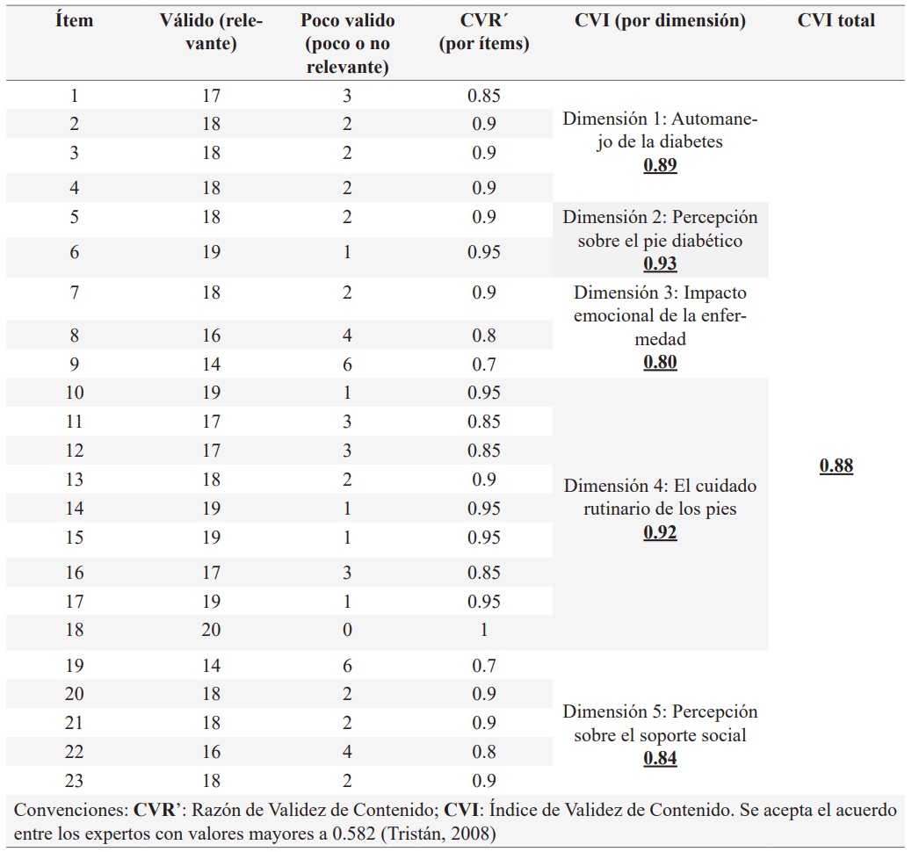

ISSN-PRINT 1794-9831 / E-ISSN 2322-7028
Vol. 19 Nº 3 / sep - dic, 2022 / Cúcuta, Colombia.
ISSN-PRINT 1794-9831 / E-ISSN 2322-7028
Vol. 19 Nº 3 / sep - dic, 2022 / Cúcuta, Colombia.
Resumen
Objetivo: Realizar el diseño y la validación del cuestionario “Nivel de autocuidado en la prevención del pie diabético” en términos de su contenido, constructo, confiabilidad y sensibilidad. Material y método: Estudio psicométrico desarrollado en tres fases: diseño del instrumento, a partir de las categorías teóricas que surgen de 8 entrevistas a personas con diabetes mellitus; validación aparente y de contenido, contando con la participación de 20 jueces expertos; y, validez del constructo, confiabilidad y sensibilidad, contando con 158 mediciones del instrumento. Resultados: El proceso de teorización dio origen a la versión inicial del cuestionario con 23 ítems; sin embargo, en la validación facial y de contenido requirió mejorías en la redacción y retirar un ítem, cambios que se efectuaron siguiendo las observaciones de los expertos tales como: Índice de Validez de Contenido de 0.88 y Kappa de Fleiss de 0.7606 (p=0.000). Finalmente se obtuvo la versión 2 del cuestionario NAPD.V2 con 22 ítems agrupados en 5 dimensiones: automanejo de la diabetes, percepción sobre el pie diabético, impacto emocional de la enfermedad, el cuidado rutinario de los pies y la percepción sobre el soporte social. Además, el análisis factorial exploratorio mostró una adecuada validez del constructo y su confiabilidad evidenció buen rendimiento -Alfa de Cronbach de 0,942- y una sensibilidad significativa sobre la -prueba Wilcoxon p=0.000-. Conclusiones: Tras el diseño y la validación se obtiene el cuestionario NAPD.V2 con propiedades psicométricas adecuadas para ser usado en la población con diabetes mellitus colombiana
Palabras Claves: Psicometría; Diabetes Mellitus; Educación en salud; Pie diabético; Autocuidado; Conductas relacionadas con la Salud.
Abstract
Objective: Carry out the design and validation of the questionnaire "Level of self-care in the prevention of diabetic foot" in terms of its content, construct, reliability and sensitivity. Material and method: Psychometric study developed in three phases: design of the instrument, based on the conceptualized theoretical categories of 8 interviews with people with diabetes mellitus; face and content validity, with the participation of 20 expert judges; and construct validity, reliability, and sensitivity, through 158 instrument measurements. Results: The theorization process gave rise to the initial version of the questionnaire with 23 items; however, the face and content validity required improvements in writing and removing an item, these changes were made following the experts’ observations such as: Content Validity Index of 0.88 and Fleiss’ Kappa of 0.7606 (p = 0.000). Finally, the second version of the questionnaire was made with 22 items grouped in 5 dimensions: self-management of diabetes, perception of the diabetic foot, emotional impact of the disease, routinary foot care and perception of social support. Furthermore, the exploratory factor analysis showed adequate construct validity, and its reliability evidenced good performance -Cronbach's Alpha of 0.942- and significant sensitivity -Wilcoxon test p = 0.000-. Conclusions: After design and validation, a questionnaire with adequate psychometric properties was obtained to be used in the Colombian population with diabetes mellitus.
KeyWords: Psychometrics; Diabetes mellitus; Health education; Diabetic foot; Self-care; Health behavior.
Resumo
Objetivo: Desenvolver e validar o questionário “Nível de autocuidado na prevenção do pé diabético” em termos de conteúdo, construto, confiabilidade e sensibilidade. Material e método: Estudo psicométrico desenvolvido em três fases: desenvolvimento do instrumento, a partir das categorias teóricas que surgiram de oito entrevistas à pessoas com Diabetes Mellitus; validação aparente e de conteúdo, contando com a participação de vinte juízes expertos; e, validez de construto, confiabilidade e sensibilidade com a realização de 158 medições do instrumento. Resultados: O processo de teorização deu origem à versão inicial do questionário com 23 itens; entretanto, a validação facial e de conteúdo sugeriu melhorar a redação e tirar um item, mudanças efetivadas seguindo o parecer dos expertos: índice de validez de conteúdo de 0,88 e Kappa de Fleiss de 0,7606 (p=0,000). Finalmente, obteve-se a versão 2 do questionário NAPD.V2 com 22 itens agrupados em cinco dimensões: autogestão do diabetes, percepções do pé diabético, impacto emocional da doença, cuidados rotineiros com os pés e percepção do apoio social. Além disso, o analise fatorial exploratório mostrou adequada validação de construto e a confiabilidade do questionário evidencio bom rendimento (Alpha de Cronbach=0,92) e uma sensibilidade significativa na prova de Wilcoxon p=0,000. Conclusões: Obteve-se o questionário NAPD.V2 posterior a procedimentos de desenvolvimento e validação obtendo propriedades psicométricas adequadas para o seu uso na população com diabetes mellitus colombiana.
Palavras-chave: Psicometria; Diabetes mellitus; Educação em saúde; Pé diabético; Autocuidado; Comportamentos relacionados com a saúde.
Autor de correspondencia*
1* Enfermera,
Especialista en Epidemiología Clínica, Magister en Enfermería, Candidata a doctora en Bioética.
Docente – Investigadora, Universidad
de Boyacá. Tunja – Colombia.
mpquemba@uniboyaca.edu.co,
Enfermera,
Especialista en Epidemiología Clínica, Magister en Enfermería, Candidata a doctora en Bioética.
Docente – Investigadora, Universidad
de Boyacá. Tunja – Colombia.
mpquemba@uniboyaca.edu.co,  0000-0001-5646-6123
0000-0001-5646-6123
2* Médico,
Especialista en Epidemiología. Investigador Universidad de
Boyacá. Tunja – Colombia.
ddavids89@hotmail.com, 0000-0001-6063-664X
3* Médico,
Especialista en Medicina
Interna. Docente - Investigador Universidad de Boyacá. Tunja – Colombia.
ejrozo@uniboyaca.edu.co, 0000-0002-3519-3645
4* Enfermera.
Egresada de la Universidad de Boyacá. Tunja – Colombia.
luzramos@uniboyaca.edu.co, 0000-0001-9031-6233
5* Enfermera.
Egresada de la Universidad de Boyacá. Tunja – Colombia.
olriano@uniboyaca.edu.co, 0000-0002-2251-2395
Recibido: 14 marzo 2022
Aprobado: 8 julio 2022
Para citar este artículo / To reference this article / Para citar este artigo: Quemba-Mesa MP, Vega-Padilla JD, Rozo-Ortiz E, Ramos-Hernández LJ, Rianño-López OL. Diseño y validación del cuestionario de autocuidado preventivo del pie diabético NAPD. 2022; 19(3):44-55. https://doi.org/10.22463/17949831.3306
© Universidad Francisco de Paula Santander.
Este es un artículo bajo la licencia CC-BY-NC-ND

Introducción
La Diabetes Mellitus (DM) es una enfermedad crónica como consecuencia de la deficiente o ausente producción de insulina en el páncreas; en las Américas se estiman unos 62 millones de personas con este diagnóstico, proyectando un aumento a 109 millones de casos para 2040 (1); al respecto se estima la existencia de 1.676.885 personas con esta enfermedad en Colombia para el año 2021 (2). Lo anterior se debe tener en cuenta para el fortalecimiento de los Programas de promoción y prevención encaminados a la detección y tratamiento oportuno de esta patología y la intensificación de las acciones educativas hacia hábitos de vida saludable (3- 5).
El Pie Diabético (PD) es una complicación prevenible de la DM que se da con una frecuencia significativa, pues cada 30 segundos genera la amputación de una extremidad en el mundo, lo que representa el 70% de todas las amputaciones de extremidades inferiores (1). Se ha evidenciado la importancia de las actividades de autocuidado en la prevención del PD (6 - 10), lo que permite resaltar la importancia de efectuar acciones de educación en salud que las fomenten. La incorporación de estas actividades a las rutinas habituales de cada persona esta mediada por la capacidad de la agencia de autocuidado, concepto central de la Teoría de Enfermería de Dorothea Elizabeth Orem que la define como el poder de la persona para realizar operaciones de autocuidado (11).
Al respecto, como parte de las intervenciones en la prevención del PD se requiere fomentar altos niveles de autocuidado, lo cual generaría un impacto favorable en las personas con DM, disminuyendo así la prevalencia de estas complicaciones, así como de amputaciones y de su consecuente impacto en la calidad de vida de los pacientes con DM (12 - 13). Por lo anterior, es necesario contar con instrumentos válidos para la población colombiana que permitan establecer de forma integral el nivel de autocuidado en la prevención del PD, incluyendo las medidas específicas de cuidado de los miembros inferiores y los otros aspectos relacionados con el adecuado automanejo de la DM, pues si este automanejo no es favorable existen altas probabilidades de desarrollar tanto PD como otras complicaciones de esta patología.
Objetivo
Realizar el diseño y la validación del cuestionario “Nivel de autocuidado en la prevención del pie diabético” (NAPD) en términos de su contenido, constructo, confiabilidad y sensibilidad.
Materiales y Métodos
Estudio psicométrico del diseño y la validación de los instrumentos de medición que se hizo en el marco del desarrollo del proyecto de investigación docente “Evaluación de una intervención educativa para fortalecer el nivel de autocuidado en la prevención de pie diabético en personas con diabetes mellitus atendidas durante el 2018 en una institución de salud de la ciudad de Tunja”, del cual se derivó la tesis de pregrado “Validez aparente y de contenido del cuestionario nivel de autocuidado en la prevención del pie diabético en personas con diabetes mellitus de Boyacá”. Se contó con el aval del Comité de bioética en investigación de la Universidad de Boyacá. Este estudio psicométrico se desarrolla en tres fases:
Fase 1: Diseño del instrumento, siguiendo a Ruiz y M (14) en su concepto sobre cuestionario teniendo en cuenta la identificación de las categorías temáticas que integran la definición sobre el autocuidado en la prevención del PD. Esto se hizo tomando como base la realización de entrevistas a profundidad a personas con DM sobre los significados que ellos dan al autocuidado en la prevención del PD; seguidamente se procedió a la triangulación de los hallazgos con los aportes de la literatura científica. Luego se efectúa el análisis, la síntesis y la formulación de cada ítem del instrumento de medición.
Fase 2: Validación aparente y de contenido por juicio de expertos, tomando como referente el modelo de Lawshe (1975) modificado por Tristán (2008) (15), integrando así la validez aparente –que valora la claridad, la comprensión y la precisión-, así como la validez de contenido al calcular la razón de validez de contenido, el índice de validez de contenido y el estadístico Kappa de Fleiss (16). Esta fase contó con la evaluación de 20 jueces (17), distribuidos como sigue: 10 expertos en manejo de pacientes con DM -con experiencia mayor a 5 años; y 10 pacientes con este diagnóstico desde hace más de 3 años.
Fase 3: Validez del constructo de confiabilidad y sensibilidad de la versión 2 del cuestionario NAPD.V2. La validez del constructo se valoró por medio de la realización de un análisis factorial exploratorio –que explora los factores comunes o dimensiones que explican las respuestas en los ítems de un test- (18). Por otra parte, la evaluación de la confiabilidad hace referencia a la consistencia de las medidas tomadas (19); y la sensibilidad al cambio del instrumento está–medida por las diferencias entre las puntuaciones antes y después de la aplicación de una intervención- (20). Esta fase contó con 158 participaciones como unidades de análisis, tomadas del estudio “Evaluación de una intervención educativa para fortalecer el nivel de autocuidado en la prevención de pie diabético en personas con diabetes mellitus atendidas durante el 2018 en una institución de salud de la ciudad de Tunja”, con pacientes que cumplieron los siguientes criterios de selección: ser mayores de edad, tener diagnóstico confirmado hace más de seis meses de DM Tipo 2, contar con al menos una de las extremidades inferiores completas y sin úlceras de PD activas, estar ubicado en niveles bajos y medios de dependencia según la escala de funcionalidad PULSES (12 puntos o menos) y tener las capacidades de autocuidado conservadas (atención, percepción visual, capacidad de comunicación y orientación).
Resultados
Fase 1: En el diseño del instrumento se tuvo en cuenta la metodología de la Pirámide de Wengraft, donde de acuerdo a la coherencia con los objetivos del estudio se diferencian las preguntas en un lenguaje próximo a los entrevistados (21 - 22). El fundamento teórico del instrumento parte de la interpretación de las narrativas de 8 entrevistas a profundidad a personas con DM sobre su percepción frente a qué es y cómo se previene el PD; estas fueron trianguladas a la luz de la literatura relacionada. De este proceso se derivó la versión 1 del “Cuestionario nivel de autocuidado en la prevención del pie diabético” NAPD.V1, la cual estaba constituida por 23 ítems agrupados en 5 dimensiones: automanejo de la diabetes, percepción sobre el pie diabético, impacto emocional de la enfermedad, el cuidado rutinario de los pies y la percepción sobre el soporte social.
Esta fase inicial, permitió conceptualizar el autocuidado en la prevención del PD como esa capacidad que desarrollan las personas con DM para identificar sus necesidades de cuidado y realizar acciones diarias para optimizar su estado de salud, lo que implica el cuidado rutinario propio del manejo de la DM y el de los pies; esta capacidad se ve directamente afectada por las dimensiones emocionales y relacionales con las redes de soporte social del paciente con DM.
Tabla 1. Cálculo de la razón y el índice de validez de contenido
Fuente: Autores
Fase 2: La NAPD.V1 fue sometida a validez aparente y de contenido por juicio de expertos. Una vez que cada juez evaluó los ítems en relación a su “relevancia”, se determinó el número de coincidencias, obteniendo para cada ítem y para cada dimensión el puntaje total del instrumento con unos resultados en función de la Razón de Validez de Contenido (CVR’) y el Índice de Validez de Contenido (CVI), mostrando de forma general un acuerdo entre jueces, mayor del parámetro mínimo establecido (entre 0,70 y 1) (Ver Tabla 1). Al calcular tanto la Razón como el Índice de Validez de Contenido discriminado para los 10 expertos en manejo de pacientes y los 10 pacientes, en las diferentes dimensiones osciló entre 0,70 y 1. Estos resultados muestran un acuerdo significativo frente a la valoración de la relevancia de este instrumento.
De igual manera, el instrumento obtuvo un coeficiente de Kappa de Fleiss global de 0.7606 (p=0.000) equivalente a una fuerza de concordancia considerable; al calcular esta fuerza de concordancia discriminada para los 10 expertos en manejo de pacientes y los 10 pacientes se consiguió una concordancia considerable en ambos casos (Kappa de Fleiss de 0.7079 con p de 0.000 y de 0.8311 con p de 0.000, respectivamente); estos mismos resultados favorables fueron extensivos a la discriminada por cada dimensión y en los criterios generales. La dimensión con menor rendimiento fue “Automanejo de la diabetes” (Kappa de Fleiss= 0.6697) (Ver Tabla 2). Teniendo en cuenta los rendimientos individuales (cuantitativos y cualitativos) de cada dimensión e ítem se obtuvo una versión 2 ajustada del instrumento NAPD.V2, la cual conservó sus dimensiones y pasó de tener 23 a 22 ítems, siendo todos ajustados en cuanto a su claridad, comprensibilidad y precisión.
Tabla 2: Resultados generales de concordancia
Fuente: Autores
Fase 3: Esta fase se desarrolló tomando la versión 2 del instrumento “Nivel de autocuidado en la prevención del pie diabético” NAPD.V2
Validez de constructo - Análisis factorial exploratorio.
Previo a la realización de este análisis, se requiere comprobar los requisitos para el desarrollo de esta prueba, teniendo como base la medida Kaiser-Meyer-Olkin (KMO), la cual compara los coeficientes de correlación parcial; en cuanto más grande sea su valor en escala de 0 a 1, más apropiado es realizar este tipo de análisis; para el NAPD.V2 la KMO fue de 0,918. Así mismo, la prueba de esfericidad de Bartlett como otro requisito a superar para el NAPD.V2 obtuvo una significancia de 0,000, lo que permitió rechazar la hipótesis nula -no existen correlaciones significativas entre las variables-.
Tras la realización de estas pruebas, el porcentaje de varianza del instrumento por cada uno de sus componentes, se estableció como sigue: este instrumento cuenta con 5 dimensiones; es decir, que al extraer 5 componentes el modelo explica el 75% de su varianza. Por otra parte, al revisar los auto-valores que son mayores que 1, se consiguieron 3 con estas características, por lo cual se sugiere que existen 3 componentes principales en el instrumento, los cuales explican el 66% de su variabilidad. Este análisis permite tener una aproximación de los escenarios más favorables frente al posible número mínimo de dimensiones con las cuales se puede explicar el presente instrumento. En relación al gráfico de sedimentación (Ver Figura 1) o prueba de sedimentación de Cattell se muestra una representación gráfica de los auto-valores, siendo el final de la tendencia de descenso el número óptimo de factores que deben estar presentes en el instrumento, observando que este descenso termina entre los componentes 3 y 5, como número ideal de dimensiones para el NAPD.V2.
Al analizar las comunalidades reproducidas con el método de componentes principales muestran que las variables explicadas en menor proporción por el modelo corresponden a los ítems 12, 14, 17 y 21 (están entre el 0,44 y el 0,49) siendo los otros 18 explicados en una proporción considerable (están entre 0,53 y 0,81). Al revisar el modelo resultante y aplicar el método de rotación Varimax con normalización Kaiser (la rotación se sometió a 5 iteraciones) se identifican tres componentes principales, y se hace la extracción de los factores que los integran de acuerdo a sus rendimientos.
En la Tabla 3 se puede observar el resultado de la extracción de los 22 factores o ítems y su agrupación en los componentes donde se explica la mayor proporción de su varianza, y se hace el paralelo entre estos componentes con las dimensiones propuestas para el NAPD. V2. Con lo anterior, se puede ver que los ítems que conforman las dimensiones 1, 2 y 4 del instrumento se agrupan en el componente 1, lo cual muestra coherencia temática porque estos ítems hablan sobre el manejo de la diabetes y la prevención del pie diabético. En este mismo sentido el componente 2 quedó constituido por los ítems de la dimensión 5 del instrumento, los cuales hablan del soporte social percibido, y finalmente el componente 3 está conformado por los ítems de la dimensión 3 del instrumento, los cuales hablan del impacto emocional de la enfermedad. Por tanto, los 22 ítems del NAPD.V2 tienen una agrupación pertinente en sus dimensiones (Ver Tabla 4), no existiendo ninguno que este mostrando mal rendimiento de acuerdo a su posición, lo que señala propiedades que dan cuenta de una adecuada validez del constructo.
Evaluación de la confiabilidad y sensibilidad al cambio.
El análisis de confiabilidad del NAPD.V2 mostró un valor de Alfa de Cronbach en el rango de excelencia al ser > mayor a 0,9 (0,942) (21); por su parte la confiabilidad desde el método de las dos mitades -resultados pares v/s impares- obtuvo un coeficiente de Spearman de 0,965 (p=0,000). Estos resultados muestran una adecuada fiabilidad del NAPD.V2, pues sus 22 ítems miden el mismo constructo (o dimensión teórica) (Ver Tabla 4). En cuanto a la sensibilidad se compararon las mediciones antes y después de la implementación de una intervención sobre el fortalecimiento del autocuidado, mediante la prueba de Wilcoxon de los rangos con signo para muestras relacionadas, obteniendo un resultado de cambios significativos (p=0,000), lo que muestra que el NAPD.V2 es sensible para determinar cambios tras la realización de intervenciones en un mismo grupo de personas.
Tabla 3: Paralelo entre las dimensiones del NAPD.V2 y los componentes del modelo de análisis factorial resultante
Fuente: Autores
Tabla 4. Cuestionario “Nivel de autocuidado en la prevención del pie diabético” NAPD.V2

Fuente: Autores
Figura 1. Gráfico de sedimentación
Fuente: Autores
Discusión
Este estudio permitió desarrollar el diseño del cuestionario NAPD.V2 a partir de las categorías teóricas conceptualizadas de 8 entrevistas a personas con diabetes mellitus, así como su validación aparente y de contenido, contando con la participación de 20 jueces expertos, del mismo modo, se examinó su validez, confiabilidad y sensibilidad, a través de 158 mediciones del instrumento. La realización de estas fases metodológicas se considera como una fortaleza de esta investigación, al valorar sus aportes en la cualificación de los instrumentos de medición en ciencias de la salud, dado que aún se da un uso frecuente de instrumentos no validados, no cursando estos los procesos dinámicos y continuos de validación (21-22).
El apreciar las características de los ítems de este tipo de instrumentos es un criterio esencial para determinar la calidad de la medición en salud de un instrumento (22). Por eso en el presente estudio se consideraron las fases de diseño, validez aparente, de contenido, de constructo, confiabilidad y sensibilidad; en consecuencia, este proceso permite obtener un cuestionario con adecuadas propiedades psicométricas listo para ser usado en la población con DM de Colombia y en países de habla hispana. Por otra parte, el NAPD.V2 identifica las necesidades individuales prioritarias a ser intervenidas para fortalecer el autocuidado en las personas con DM, además se puede usar en la monitorización objetiva del impacto de las acciones preventivas realizadas, lo cual beneficia a las personas con DM, pues al garantizar el fomento de su autocuidado se gana terreno en la prevención de las complicaciones de la DM y de forma específica del PD.
Al contrastar el NAPD.V2 con instrumentos de medición similares, se encontraron cinco estudios psicométricos con diferentes enfoques conceptuales y propósitos. En este sentido, Mendonça y cols., reportan la construcción y validación de un instrumento general sobre evaluación del autocuidado para pacientes con DM (23); Chin y Huang muestran el desarrollo y validación de una escala de comportamientos de autocuidado del PD (24); entre tanto Aljohani y Kendall reportan la evaluación psicométrica del resumen de las actividades de autocuidado de la DM -SDSCA- (25). Por su parte, Navarro publicó el desarrollo, validación y análisis psicométrico del cuestionario de autocuidado del PD -DFSQ-UMA-, que incluye aspectos específicos sobre cuidados pedios (26) y que fue traducido al italiano (27); finalmente, Tayana y cols., realizaron la adaptación cultural y validación del instrumento NeuroQol, el cual está enfocado en las implicaciones en la calidad de vida de la neuropatía y del PD (28).
Como se evidenció al revisar estos referentes, algunos se enfocan en el impacto de una lesión activa y/o de la neuropatía más no en la prevención del PD (24-28); otros miden únicamente el autocuidado de forma general en DM (23-25); y los otros abordan solamente la realización de actividades rutinarias para la prevención del PD (26). Así, los instrumentos generales no abordan específicamente el autocuidado en la prevención del PD; y los específicos para PD descuidan aspectos generales del automanejo de la enfermedad que son fundamentales en la prevención del PD. Por lo anterior, la pertinencia del cuestionario NAPD.V2 está en la inclusión de aspectos que en conjunto abarcan ampliamente el autocuidado en la prevención del PD, a partir de las dimensiones del automanejo de la DM, la percepción sobre el PD, el impacto emocional de la enfermedad, el cuidado rutinario de los pies y la percepción sobre el soporte social, en función de los postulados de la Teoría de enfermería de déficit de autocuidado de Dorotea Orem, los cuales formalizan los conceptos de: déficit de autocuidado, agencia de autocuidado y el agente de autocuidado (29). Adicionalmente, se considera relevante mencionar que ninguno de los instrumentos encontrados como parte de los referentes teóricos (23-27), reporta procesos de adecuación semántica para el contexto colombiano.
Sobre las dimensiones que el cuestionario NAPD.V2 aborda, es necesario hacer un recorrido por sus características centrales, como se verá a continuación. La dimensión Automanejo de la DM integra aspectos trasversales como la alimentación, la medicación, control de la glucemia y las recomendaciones generales para control de la enfermedad; es frecuente que los pacientes que no tienen un adecuado automanejo de la enfermedad presenten más riesgo sobre fallas multi-orgánicas que pudiese complicar la DM y acelerar la aparición del PD (30). La dimensión Percepción sobre el PD aborda el reconocimiento que la personas con DM tienen del riesgo de desarrollar este tipo de lesiones, lo cual es fundamental, porque si la persona reconoce ese riesgo ejecutará mejor sus rutinas de autocuidado, disminuyendo el riesgo de desarrollar PD (31). La dimensión Impacto emocional de la enfermedad se preocupa por los efectos emocionales específicos que genera el vivir la DM, como son: tristeza, angustia, sentirse como una carga, entre otros, los cuales son trascendentales, pues la DM genera múltiples cambios en los estilos de vida de las personas que la padecen, lo que afecta su calidad de vida y la emocionalidad (32), pues esta patología y sus complicaciones limitan la capacidad física de la persona (33-34) generando distorsión de su imagen corporal. La dimensión cuidado rutinario de los pies aborda los cuidados específicos en la prevención del PD -observación, higiene, uso de calzado, corte de uñas, identificación de signos de alarma, entre otros-; estas medidas de autocuidado previenen el desarrollo del PD, por tanto, es importante integrarlas a la vida diaria (31). Por último, la dimensión Percepción sobre el soporte social se preocupa por identificar el apoyo social familiar y desde las instituciones de atención en salud; por tanto, cuando las personas con DM perciben un bajo nivel de apoyo social se produce un importante descenso en su calidad de vida (32), lo cual dificulta tener un adecuado manejo de esta patología.
Como parte de las limitaciones de este estudio se sugiere la necesidad de aplicarlo a poblaciones más amplias, y de avanzar en pruebas de validación que permitan reconocer con amplitud sus propiedades psicométricas y el poder predictivo que tiene sobre el nivel de autocuidado que tiene la población con DM para prevenir el desarrollo de PD.
Conclusiones
Conflicto de intereses
Los autores reportan la no existencia de conflictos de interés en el desarrollo del presente manuscrito.
Referencias